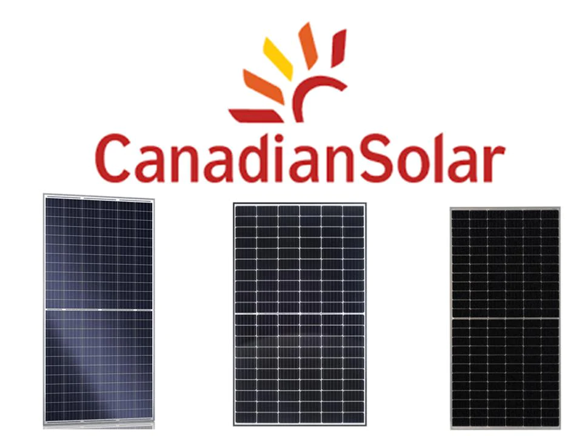
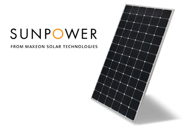
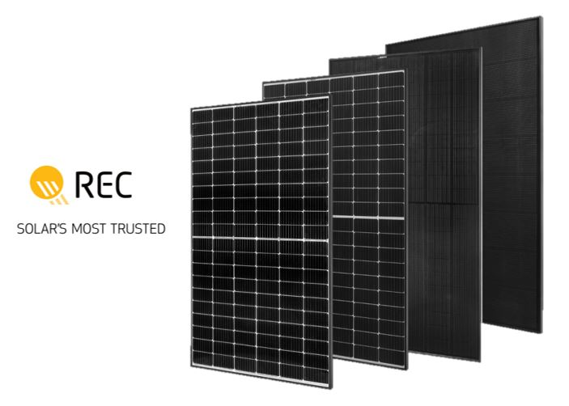
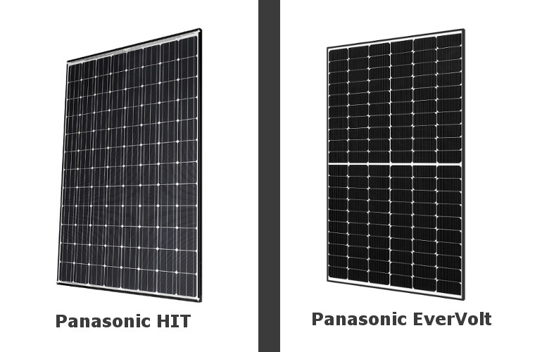

-
Panourile solare Canadian Solar
Sunt considerate ca fiind una dintre companiile de top de panouri solare, datorită eficienței sporite și a calității pe care o oferă la un preț accesibil.
Este raportat că prețul plătit de cumpărători pentru 5kW pornește de la 2000€ și poate ajunge până la 12000€.
Un minus al acestor panouri solare este producția de energie după 25 de ani de utilizare care ar putea să scadă la 85%-89%.
 -
Panourile solare SunPower
Panourile solare de la SunPower sunt cotate ca cele mai bune de pe piața actuală, compania având mai mult de 30 de ani de experiență în acest domeniu.
Pentru 5kW, prețul plătit de clienți variază între 14000€ și 23000€. Acesta poate fi considerat singurul minus al panourilor SunPower.
După 25 de ani de funcționare, aceste panouri garantează 92% din eficiența pe care le au în primii ani.
 -
Panourile solare REC
REC este o companie importantă din domeniu, fiind un competitor direct ai celor de la SunPower.
Clienții plătesc între 10000€ și 15000€ pentru 5kW. Având în vedere că panourile celor de la SunPower sunt foarte puțin mai bune decât cele de la REC, diferența prețului aduce mai mulți clienți panourilor REC.
În funcție de modelul cumpărat, eficiența după 25 de ani este de 86% sau de 92%.
 -
Panourile solare Panasonic
Compania Panasonic este un puternic competitor pe piața de panouri solare, având prețuri mid-range.
Având prețul între 12000€ și 16000€ pentru 5kW, acestea au cel mai bun raport calitate-preț din această listă.
Cei de la Panasonic asigură că după 25 de ani, eficiența nu poate să scadă sub 92%. În viitor, Panasonic va avea un alt producător de panouri solare.
